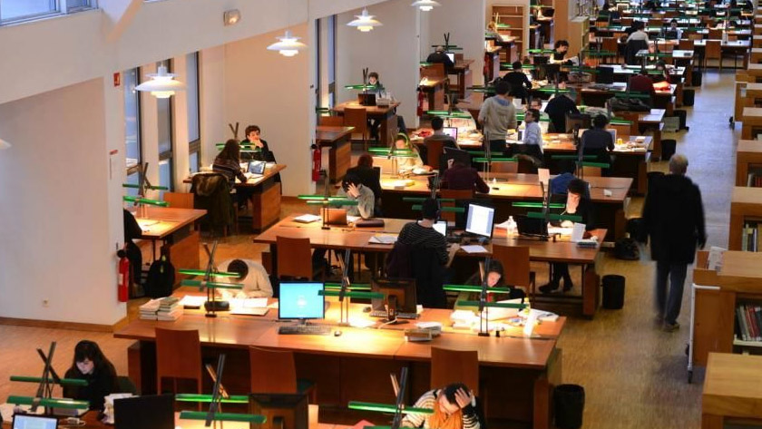
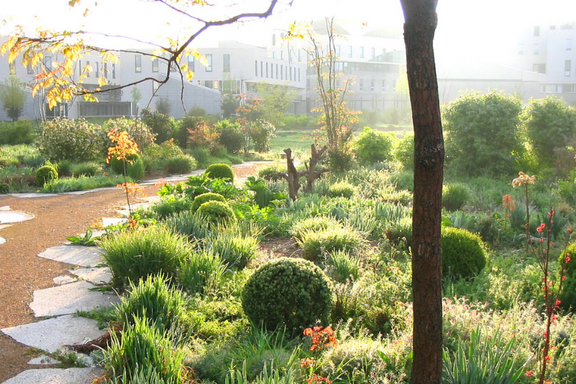

Campus de l’ENS
Main workshops venue
You will be attending the workshops at the campus of L’École Normale Supérieure de Lyon (ENS), considered one of the three most prestigious French universities.
There are two campuses, Monod for Humanities and Descartes for Science. They are located in the Gerland area of Lyon, known for its industrial and commercial past, and revamped today into a modern residential district.
It’s within easy reach from La Sucrière, just 3-4 tram stops to ENS or Debourg stops. If you’d rather walk, it should take around 20-30 minutes (note: there’s a bridge over the train tracks not shown in the map).
